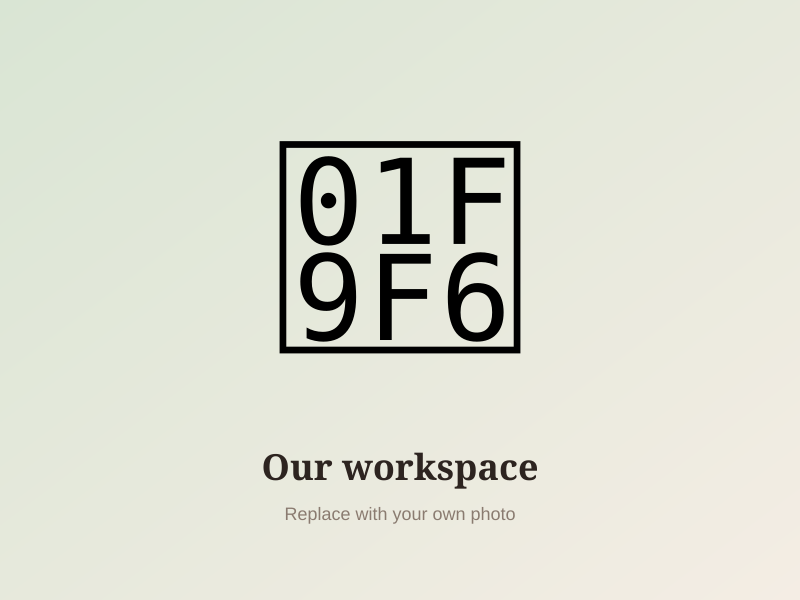

আমাদের গল্প · Our Story
হাতে তৈরি, হৃদয় থেকে — Handcrafted with Love
How Floral Craft began
Floral Craft started at a kitchen table with a ball of wool and a lot of patience. What began as knitting a muffler for a family member soon turned into a small studio making mufflers, tupis, dresses and everlasting sota flowers for friends, and then for customers across Bangladesh.
আমরা বিশ্বাস করি, হাতে বানানো জিনিসে একটা আলাদা উষ্ণতা থাকে। প্রতিটি সেলাই, প্রতিটি পাপড়ি আমাদের কারিগররা যত্ন করে তৈরি করেন, যাতে আপনার প্রিয়জনের কাছে পৌঁছে যায় একটুকরো ভালোবাসা।
Every piece is made by hand by our small team of artisans, using soft, skin-friendly yarn and quality thread. No two pieces are exactly alike, and that is what makes them special.
Browse our products
আমাদের মূল্যবোধ · Our Values
Handmade
Every product is crafted stitch by stitch, never mass produced.
Sustainable
Made to order in small batches to reduce waste, built to last for years.
Local
Supporting local artisans and sourcing materials within Bangladesh.
আপনার পছন্দের জিনিস খুঁজে নিন
Find something made just for you, or ask us for a custom design.
Shop Now